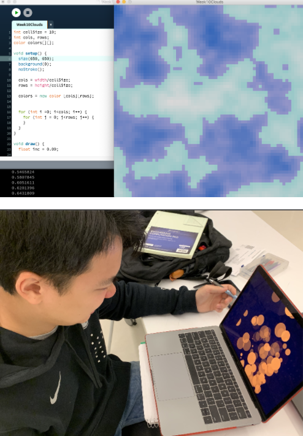
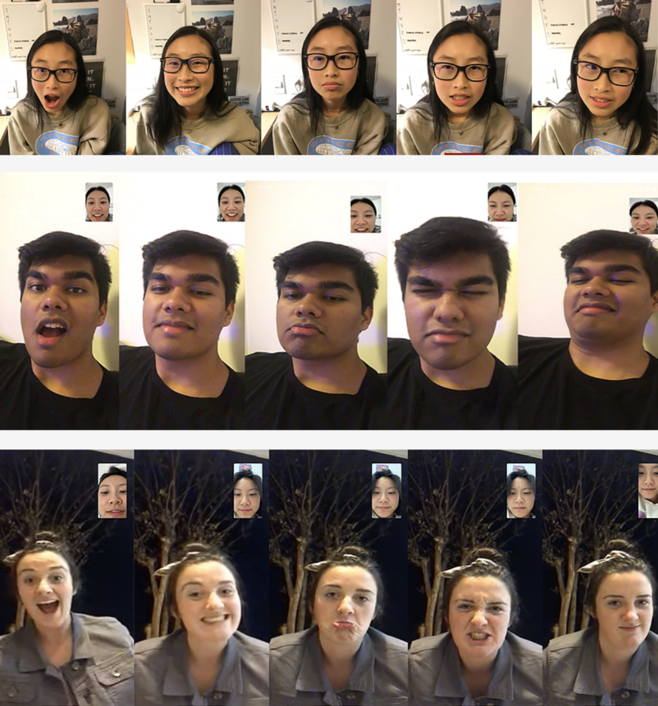
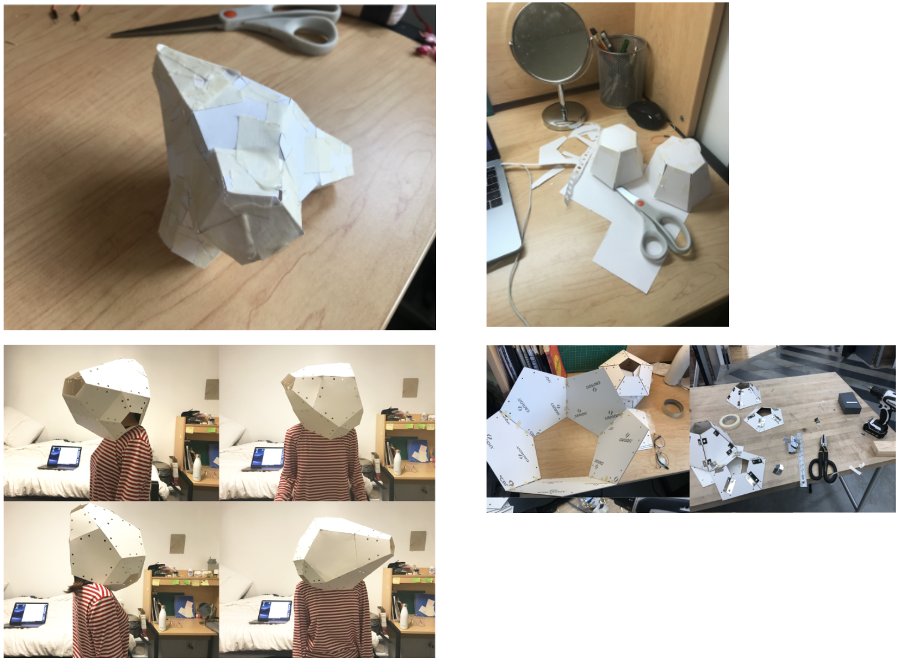

Facial expression is a form of representation and communication.
When we have certain emotions, we want to express it to others. For some, it may not be
quite as easy to physically portray how you feel. This project was a study aimed to
explore our representation of emotion through a method of digital communication. Towards the
end of this experience, users will see the symbolism in the colors and
hopefully will become more aware about how they portray their emotions through technology.
SKILLS
Data visualization, Prototyping, Coding(processing + arduino)
MY ROLE
Designer + Researcher
COLLABORATORS
Individual Project
PROJECT TIMEFRAME
Spring 2018 –– 5 Weeks
How it Works
1. Use your computer to track your face using FaceOSC. Move around and try different expressions to
capture the mesh on your face.
2. Once you got your facial recognition going, try changing your expressions to see your facial data
translated into a color visualizer on screen using real-time data.
3. Finally, another user will be engaged in an immersive environment soley based off of
how you create your facial expressions. The other user must put on the headpiece while you are
in front of the device experimenting with your facial data. Inside the headpiece, the other user
will be immersed in a vibrant scene where they can visualize your emotions.
Research
To understand the users' interpretation regarding the relationship between color and facial
expression, I conducted 2 social experiments as well as 2 digital interviews and 2 in-person interviews.
Goal: Collect data of an emotion's relation to a color through several variations
of coded visuals.
Learnings: People generally associate the same colors with the same emotions. However,
the level of detail was different among people's emotion.
Goal: Discover relationship between facial expression and separate colors
through digital interviews.(Expressions from left to right are Surprised, Happy, Sad, Angry, Disgust).
Learnings: There were almost exact patterns among initial reactions and expressions
of intuition.


Prototyping
During the prototyping phase, I started quick exercises where I created small
scale mockups of three-dimensional abstract figures that could be a potential
immersive headpiece. I then moved on to more large scale forms and achieved this
shape through cutting and taping into a more "helmet" like shape. During the
prototyping phase, I started quick exercises where I created small scale mockups
of three-dimensional abstract figures that could be a potential immersive headpiece.
I then moved on to more large scale forms and achieved this shape through cutting and
taping into a more "helmet" like shape.

Final Iteration